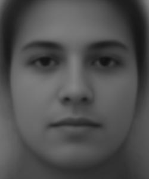
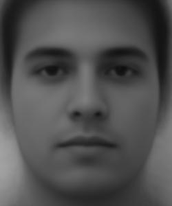

On the right, the famous painting "The Two-Thousand Yard Stare" by Thomas Lea, depicting a US Marine in the Pacific Theater of WW2, hardened by months of brutal, bloody warfare.
On the left, my friend Nikhil, minutes before his statistical mechanics exam. Nikhil is a fourth-year physics major, a sin for which he has suffered tremendously.
So, let's mix the two!
Part 1. Defining Correspondences
The first step I had to take was to painstakingly manually resize and align the two images. I opened the two images in Google Drawings, traced the eyes, and resized and aligned them there. I then calculated approximate offsets and scaling off of the inch measurements in Google Drawings, and then manually tweaked them in Python until I got a satisfactory alignment.
The next step was to tediously manually select corresponding points between the two images. I selected key features such as outlines of the face, borders of the eyes, corners of the nose, and the edge of the helmet in the second photo. I ended up marking 74 points per image. Averaging the locations of the points between the images, I used Delaunay triangulation to divide the images into matching sets of triangles.
Part 2. Computing the "Mid-way Face"
To morph the two images together, I morphed both of them to their average shape, and then averaged the colors together.
To morph an image to a new shape, I used a loop over the triangles in the triangulation. For each triangle, I calculated the affine transformation that would transform the target triangle into the original triangle, and applied this transformation to all the points in the target triangle in order to obtain colors for the warped images.
Part 3. The Morph Sequence
By shifting the warp and dissolve fractions in the morphing function, we can generate a smooth transition between the two images!
Part 4. The "Mean Face" of a Population
For this part, I used the 200 neutral-face images from the FEI face database. Morphing all the images to match the average shape, then averaging them gives us an average face.

Here's a couple of faces from the dataset, morphed to match the average shape.
The next step was to morph me into the average face. To do that I had to manually align and annotate my face in the exact same manner as in the dataset, which was another nontrivial process.
Here's me morphed to the shape of the average face, and the average face morphed to the shape of me.
Part 5. Caricatures: Extrapolating from the Mean
Instead of just morphing to the average face, I can actually accentuate my features by morphing to points further away from the average. The target shape is given by:
current shape + alpha * (current shape - mean shape)
With alpha of 0.5, 1.0, and 1.5, we get the following 3 caricatures.
Part 6. Bells & Whistles: Gender Swap

By splitting the dataset into faces with male and female features, I can calculate an average man's face and an average woman's face. By taking the difference between the average man and the average woman, I can make myself look more male or female.
We can get the difference between the annotated points on the male and female faces, and by adding this difference to the points on my face, we can morph my face to look more male or female. The middle column is unaltered.
We can also get the difference in color between the average man and the average woman, and adding or subracting this difference in color to my face produces the following.
Finally, combining both of these two alterations proves to be the most effective.
Acknowledgements
This project is a course project for CS 180. Website template is used with permission from Bill Zheng in the Fall 2023 iteration of the class.